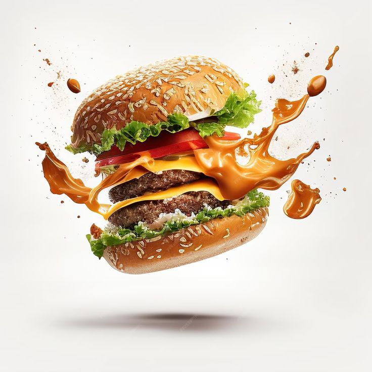

Welcome to Chief Chef Recipe Finder
Welcome to Chief Chef Recipe Finder
Your go-to platform for delicious recipes and cooking tips!
Your go-to platform for delicious recipes and cooking tips!

Discover delicious meals made easy! Our Recipe Finder helps you explore everything from quick weekday dinners to mouth-watering desserts. Each recipe includes clear step-by-step instructions, ingredient lists, and cooking tips — perfect for both beginners and pros who love good food.
Every meal in our Recipe Finder is crafted to inspire your taste buds. Whether it’s a creamy pasta, spicy stew, or a refreshing smoothie, we’ve included detailed cooking methods and serving suggestions. You can also explore vegetarian, vegan, and gluten-free options tailored to your preferences.

Cooking is more than just mixing ingredients — it’s creating moments. Our collection brings together recipes from around the world, each with a story behind it. From Kenyan pilau rich with spices to classic Italian lasagna layered with love, every dish tells its own delicious tale.
From global to your kitchen bringing a lovish taste in every bite!
Made to the best of simple for better understanding!
Easy to follow up to providing a tasty and lovish meal!

Making sure yopu have a variety of dishes to explore and taste!